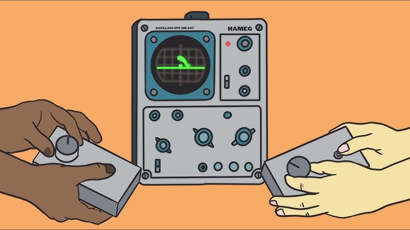
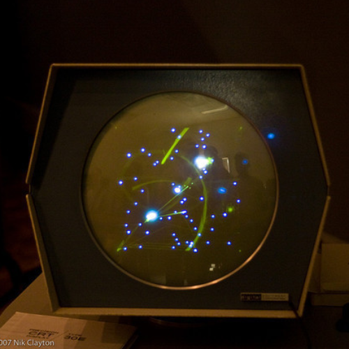

The origins of video games trace back to the mid-20th century, marking a technological revolution in entertainment. One of the earliest precursors to modern video games is "Tennis for Two," created by physicist William Higinbotham in 1958. This innovative experiment allowed players to engage in a rudimentary tennis simulation using an oscilloscope screen, serving as an early example of interactive electronic entertainment. However, it was in 1972 when Atari introduced "Pong," another pivotal moment in gaming history. This simple yet captivating table tennis simulation became an arcade sensation, captivating players around the world. Shortly thereafter, in 1978, "Space Invaders" mesmerized gamers with its alien-shooting action, becoming a cultural phenomenon. "Pac-Man," released in 1980, followed suit, introducing the iconic yellow circle gobbling up dots while evading ghosts. These pioneering video games not only sparked the arcade era but also paved the way for the video game industry's rapid growth. With their immersive experiences and interactive nature, video games have since evolved into a diverse medium encompassing a wide range of genres, from action-adventure to simulation, strategy to role-playing games. They have become a powerful form of entertainment, storytelling, and competition, captivating players of all ages and backgrounds while shaping modern culture and technology.
In addition to "Tennis for Two," another early milestone in the evolution of video games was "Spacewar!" Developed in 1962 by Steve Russell and his colleagues at MIT, this game allowed players to engage in a space battle using the institution's state-of-the-art PDP-1 computer. "Spacewar!" served as a precursor to the immersive and competitive gaming experiences that would later become synonymous with the medium. As technology advanced, the 1970s saw the birth of the home console market with the Magnavox Odyssey, an early gaming system that laid the groundwork for future gaming consoles. These innovations, combined with the creativity of game developers, set the stage for the remarkable growth and diversification of the video game industry, ultimately leading to the vast and dynamic landscape of interactive entertainment we know today.
PONG!
"Pong," born in the early 1970s, represents a pivotal moment in the history of video games. Created by Atari co-founder Nolan Bushnell and released in 1972, it's widely regarded as one of the very first video games to achieve commercial success. This simple yet addictive tennis-inspired game featured two paddles and a bouncing ball, all controlled by players using rotary controllers. The objective was straightforward: bounce the ball past your opponent's paddle to score points.
The beauty of "Pong" lay in its accessibility. Its minimalistic design made it easy for players of all ages and skill levels to understand and enjoy. The game's intuitive controls and competitive nature made it an instant hit in bars and arcades, setting the stage for the video game industry's rapid growth. "Pong" was not just a game; it was a cultural phenomenon that brought electronic entertainment into the mainstream.
Following the success of "Pong," Atari released home console versions of the game, further popularizing the medium. The success of these home consoles paved the way for the video game industry as we know it today, sparking innovation and competition among developers.
"Pong" also serves as a symbol of the potential of video games as a form of entertainment. It showcased how interactive electronic experiences could captivate audiences, laying the foundation for the diverse and expansive gaming landscape that exists today. While modern games have evolved far beyond the simple graphics and gameplay of "Pong," its legacy endures as a pioneering title that ignited a cultural phenomenon and shaped the trajectory of the video game industry.
Video- Gameplay of the game PONG!
Tennis for Two.

"Tennis for Two," created in 1958 by physicist William Higinbotham, represents a groundbreaking moment in the history of video games. Situated within the context of the Cold War and the burgeoning field of nuclear physics, Higinbotham devised the game as an interactive demonstration at the Brookhaven National Laboratory's annual visitor's day. Using an analog computer and an oscilloscope screen, players engaged in a rudimentary tennis simulation. This experiment laid the foundation for the interactive electronic entertainment we know today.
The game was deceptively simple: two players stood at either end of a screen displaying a greenish, vector-based representation of a tennis court. Using an analog controller with a knob, players could manipulate the angle and velocity of their "tennis ball," represented as a blip on the screen. The objective was clear - to volley the ball over the net, aiming to score points against their opponent. While the gameplay was basic by modern standards, "Tennis for Two" was an extraordinary technological achievement for its time.
Higinbotham's game was not just a technical marvel; it was a significant departure from the prevailing perception of computers as tools solely for scientific and military purposes. "Tennis for Two" demonstrated that computers could be used for leisure and entertainment, offering a glimpse of the medium's potential beyond its utilitarian roles. It showcased how technology could engage and captivate people, bridging the gap between science and popular culture.
Despite its modest origins as a one-time attraction, "Tennis for Two" laid the groundwork for the video game industry's future. It inspired subsequent generations of game developers to explore the possibilities of interactive entertainment. While it wasn't the first video game (that honor is often attributed to "Spacewar!" developed in 1962), it served as a crucial proof of concept for the medium's potential to deliver engaging, interactive experiences.
Image- The demonstration of the game tennis for two.
The Cathode Ray Amusement Device.

"The Cathode-Ray Amusement Device, created in 1947 by engineers Thomas T. Goldsmith Jr. and Estle Ray Mann, stands as a pioneering precursor to the modern video game. This early electronic device is often regarded as one of the earliest examples of interactive electronic entertainment. It used a cathode-ray tube (CRT) similar to those found in early televisions and computer monitors to create a simple but engaging game.
The Cathode-Ray Amusement Device featured a screen with a target displayed on it. Players could interact with the game using knobs and controls, manipulating an electron beam to move a cursor on the screen. The objective was straightforward: players aimed to position the cursor over the target and then pressed a button to "shoot." When successful, the CRT displayed a simulated explosion.
While the gameplay was rudimentary by today's standards, this device laid the essential groundwork for future electronic games. It introduced the concept of user-controlled interactions with a visual display, setting a precedent for the interactive nature of video games. The device was considered a novelty and was not widely distributed, but its impact on the development of electronic entertainment was profound.
The Cathode-Ray Amusement Device demonstrated the potential of electronic technology for amusement purposes, marking the birth of a new form of entertainment. It paved the way for the arcade games of the 1970s, such as "Pong," and the subsequent video game industry's rapid growth. In retrospect, this early invention serves as a historical milestone, showcasing the enduring human fascination with interactive electronic entertainment and laying the foundation for the immersive and diverse world of video games we know today.
Image- The machine that ran the game. This image is of a CRT screen that helped display the game.
The Machines That Ran Them.
The PDP-1 (Programmed Data Processor-1) was a groundbreaking minicomputer developed by Digital Equipment Corporation (DEC) in the late 1950s. It played a pivotal role in the early history of computing and gaming. Notably, the PDP-1 was the platform for the creation of "Spacewar!"—one of the earliest video games, developed by Steve Russell and his colleagues at the Massachusetts Institute of Technology (MIT) in 1962.
Besides "Spacewar!," the 1950s and 1960s saw the emergence of other electronic games on different platforms. For instance, "Dial-A-Score" and "Periscope" were electromechanical arcade machines that provided simplistic yet engaging gaming experiences. "Dial-A-Score" offered players a baseball-themed game using mechanical dials, while "Periscope" simulated naval combat with players looking through a periscope to target and sink ships. These early machines, though limited in complexity, showcased the early efforts to blend technology and entertainment.
The PDP-1 and its association with "Spacewar!" along with these early arcade games collectively marked the nascent stage of digital gaming, underscoring the potential of computers and electronics for interactive entertainment. These pioneering developments laid the groundwork for the subsequent explosive growth and innovation in the video game industry.